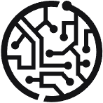

A · consultoria

Ideias que viram Operação
Você traz o problema. A gente devolve o sistema.
Software sob medida para quando a planilha não dá mais conta e o sistema de prateleira não serve.
— sob medida
Consultoria para quem constrói. Sistemas para quem precisa que já esteja pronto.
Sem assumir o teclado
Quando o time é seu, a GK entra como quem já quebrou a cara antes: diagnóstico, arquitetura e revisão — e sai deixando o time mais forte do que achou.
Ou com a mão na massa
Quando não é, a GK constrói, coloca no ar e sustenta. Você acompanha funcionando, não em apresentação.
O que sai da GK
A + B
A · consultoria
Arquitetura e decisão técnica
A · consultoria
Revisão de código e performance
A · consultoria
Apoio contínuo ao time interno
B · desenvolvimento
Sistemas internos e portais
B · desenvolvimento
Integrações e automação de processo
B · desenvolvimento
Modernização de legado
B · desenvolvimento
Sustentação depois do go-live
Duas portas, dois compromissos
A / B
A
Consultoria
Seu time constrói, a GK entra como quem já quebrou a cara antes — sem assumir o teclado.
Agendar um diagnósticoB
Desenvolvimento sob medida
A GK constrói, coloca no ar e sustenta. Você acompanha funcionando, não em apresentação.
Falar sobre um projeto